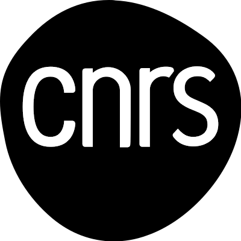
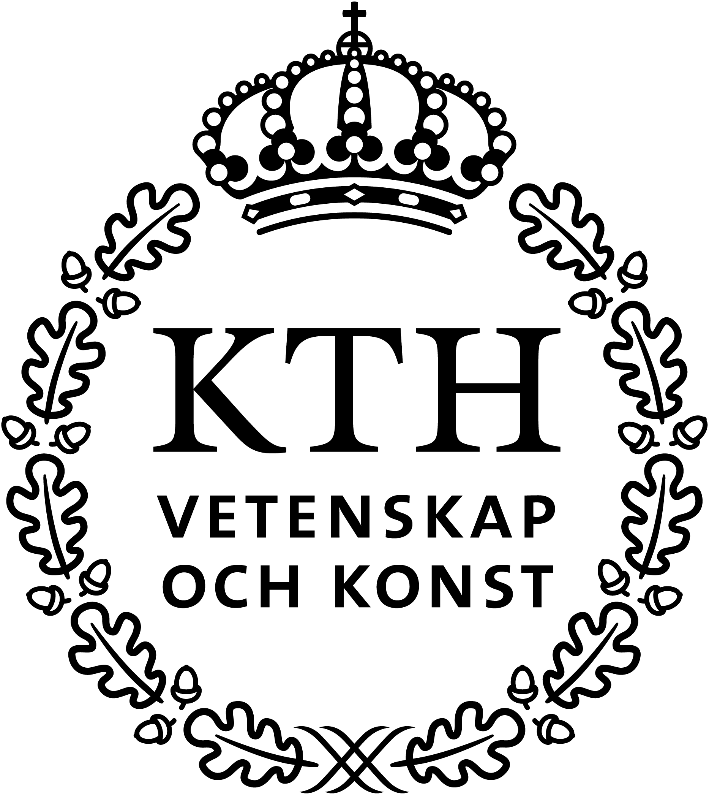
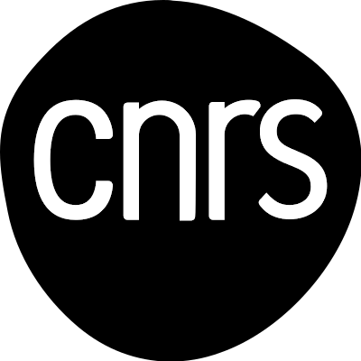
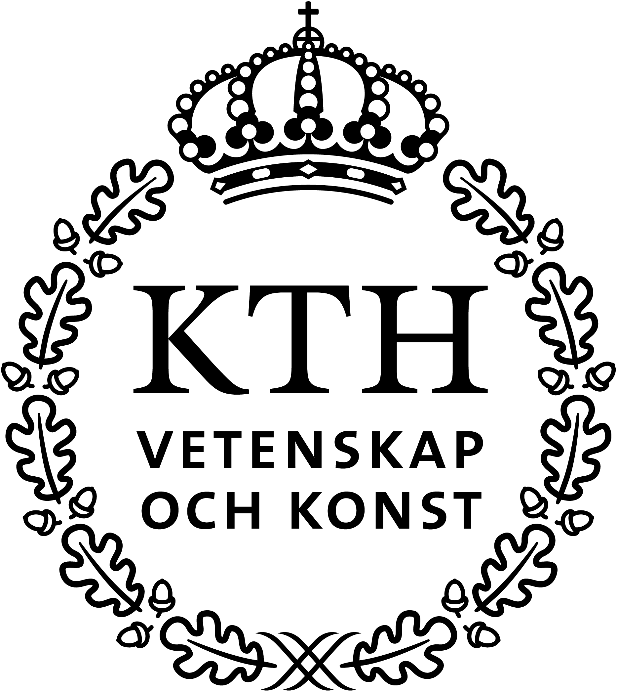

A foundational framework that bridges formal data retrieval and natural language innovation for reliable assistive technology.
Conversational AI and Large Language Models (LLMs) such as ChatGPT and Bard promise to answer complex problems by performing simple conversations. Unfortunately, their answering processes are inscrutable, as well as prone to bias, hallucinations, and high computational costs.
The ARMADA doctoral network will train 15 highly skilled Early Stage Researchers to specialize in the area of Conversational AI and tackle the challenges associated with the recent advances in developing LLMs, particularly when assisting analysis in sensitive domains.
These specialists will acquire unique knowledge and skills in Natural Language Processing, Machine Learning, Data Management, and Algorithms to evaluate and improve the reliability of LLMs. A reliable LLM will produce timely, consistent, and verifiable answers, guiding users in important decision-making processes.
The program will develop five key axes: alignment with domain knowledge, explainability and soundness of answers, reactivity via interactive correction workflows, and effectiveness and efficiency of computations. Its highly interdisciplinary approach includes summer and winter schools, workshops, and courses to hone skills across multiple dimensions including scientific writing, innovation, supervision, and management.
Importantly, the ARMADA project tackles crucial EU needs for regulating AI by training experts who may advise EU bodies on the technical adoption of these technologies in critical disciplines such as medicine, education, and business intelligence. The network brings together 8 organizations from 7 countries, managed by a diverse team of expert researchers, to form an interoperability scheme for sharing knowledge and skills.
Key Innovations:
- Conversational Data Analytics (CDA): interact with data using natural language, combine LLMs with structured query languages.
- Reliability First: redesign CDA with Efficiency, Grounding, Explainability, Soundness, and Guidance at the core.
- Compositional Framework: integrate LLMs with robust data management techniques to overcome the limits of hallucinations and opaqueness.
- Beyond Generative: towards a system that is domain-aware, verifiable, and able to justify its responses.
- Future Vision: new architectures, metrics, and methodologies for reliable, explainable, and efficient AI-driven analytics system.
 


